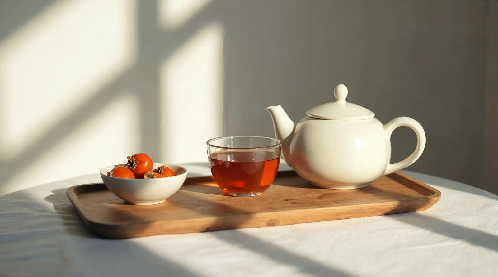
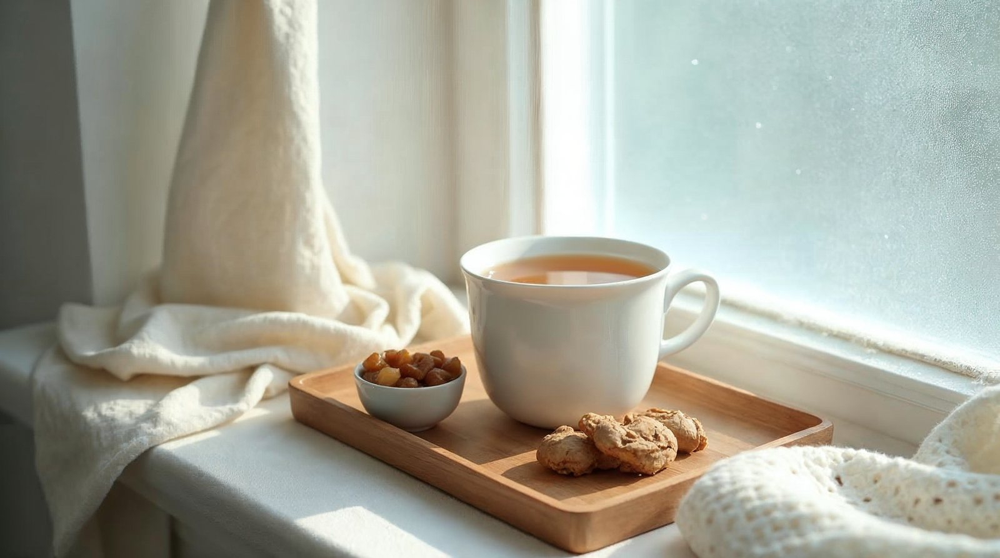
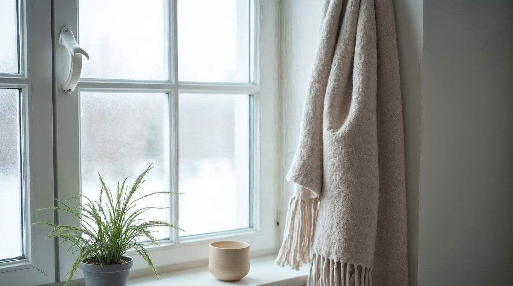
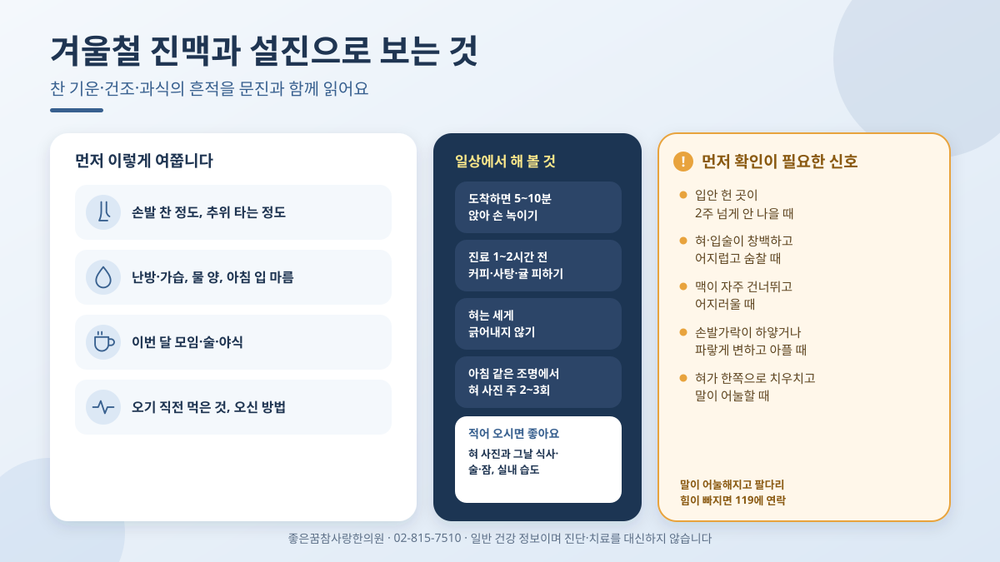

이종호 한의사 감수좋은꿈참사랑한의원 대표원장 (한의사 면허번호 19769)발행 2026-11-28 · 수정 2026-11-28
이 글의 차례
겨울이 되면 진료실에서 짚는 맥과 들여다보는 혀에도 계절의 흔적이 나타나곤 합니다. 찬 공기 속에서 지내면 맥이 조금 깊이 눌러야 느껴지거나 느려지는 쪽으로 기울 수 있고, 손발이 찬 분은 혀 색이 옅고 촉촉해 보이기도 합니다.
반대로 난방을 세게 하고 물을 덜 마시는 겨울에는 혀가 마르고 갈라진 자리가 도드라지기도 하며, 연말 모임으로 과식과 술이 이어지면 설태가 두껍고 누렇게 끼기도 합니다. 이런 변화는 그 자체로 병이라는 뜻이 아니라, 지금 몸이 어느 쪽으로 기울어 있는지 보여 주는 단서입니다.
그래서 한의원에서는 맥과 혀만 따로 보지 않고 손발의 온기, 잠, 소화, 실내 환경, 최근의 식사와 술 이야기를 함께 놓고 읽습니다. 다만 혀나 입안에 2주 넘게 낫지 않는 헌 곳이 있거나, 맥이 자주 건너뛰며 어지럽거나, 혀가 한쪽으로 치우치고 말이 어눌해진다면 진맥과 설진보다 확인이 먼저입니다.
왜 겨울에는 맥과 혀가 달라 보일 수 있을까요
- 찬 공기 속에서는 몸이 열을 지키기 위해 피부 가까운 혈관을 좁히고 따뜻한 기운을 안쪽으로 모읍니다. 한의학 고전에서 겨울의 맥은 가라앉는 경향이 있다고 설명해 온 것도 이런 흐름과 이어집니다. 손목을 조금 더 깊이 눌러야 맥이 또렷하게 느껴질 수 있습니다.
- 찬 기운을 오래 받거나 원래 손발이 찬 분은 맥이 느리고 가늘게 느껴지기도 하고, 혀 색이 옅으며 얇고 흰 설태에 표면이 촉촉해 보이기도 합니다. 한의학에서는 이를 몸이 찬 쪽으로 기운 모습으로 살피기도 합니다.
- 난방을 세게 켠 방에서 오래 지내고, 추워서 물을 덜 마시고, 코가 막혀 입으로 숨을 쉬면 혀 표면이 마르고 설태가 얇아지며 갈라진 자리가 더 도드라질 수 있습니다. 혀끝이 붉게 보이기도 합니다.
- 연말 모임에서 기름진 안주와 술, 늦은 야식이 이어지면 설태가 두꺼워지고 누렇거나 끈적하게 보일 수 있습니다. 이럴 때는 맥이 미끄럽게 구르듯 느껴지거나 평소보다 힘 있게 뛰기도 합니다.
- 겨울에는 바깥 활동이 줄고 실내에 오래 앉아 있게 됩니다. 몸이 무겁고 잘 붓는 분은 혀가 조금 부어 보이고 가장자리에 이 자국이 더 뚜렷해지기도 합니다.
- 겨울에는 찌개와 국물 요리, 김장 김치처럼 짠 음식을 자주 먹게 됩니다. 짜게 먹은 다음 날 아침에는 얼굴과 손이 붓고 혀도 조금 부어 보이며 이 자국이 더 뚜렷해지기도 합니다.
- 해가 짧아져 잠과 일어나는 시각이 흐트러지면 피로가 쌓여 맥의 힘이 약하게 느껴질 수 있습니다.
- 추운 바깥에서 따뜻한 실내로 막 들어온 직후, 뜨거운 국물을 먹은 직후, 계단을 서둘러 오른 직후에는 맥과 혀 색이 잠깐 달라질 수 있습니다. 이런 일시적인 변화는 평소 모습과 구분해서 봐야 합니다.
- 감기 기운이 막 시작될 때는 맥이 위로 떠오르듯 가볍게 느껴지기도 합니다. 그래서 목이 칼칼한지, 으슬으슬한지도 함께 여쭙습니다.

먼저 이렇게 여쭙니다
- 손발이 얼마나 찬지, 추위를 남보다 많이 타는지, 잘 때 이불과 난방은 어떻게 하시는지 여쭙니다.
- 집과 사무실의 난방 온도, 가습기 사용, 하루에 마시는 물의 양, 아침에 입이 마르는지 여쭙니다.
- 이번 달 모임 횟수와 술의 양, 야식, 최근 과식한 날이 있었는지 여쭙니다.
- 소화는 어떤지, 대변이 묽은지 단단한지, 밤에 소변 때문에 깨는지 여쭙니다.
- 잠드는 시각과 깨는 횟수, 아침에 일어날 때의 몸 상태를 여쭙니다.
- 목이 칼칼하거나 콧물, 오한 같은 감기 기운이 있는지 여쭙니다.
- 오시기 직전에 무엇을 먹고 마셨는지, 걸어오셨는지 차로 오셨는지 여쭙니다.
- 철분제, 항생제, 위장약처럼 혀 색이나 설태에 영향을 줄 수 있는 약을 드시는지 여쭙니다.
- 여성이라면 생리 주기 가운데 지금이 언제쯤인지 여쭙니다. 생리 전후에는 맥이 평소와 다르게 느껴질 수 있습니다.

일상에서 먼저 해 볼 수 있는 것
진료 받으러 오는 날, 평소 모습에 가깝게 살피려면
- 도착하면 겉옷을 벗고 5~10분 앉아 손을 녹입니다. 손목이 차가운 상태에서는 맥이 실제보다 깊고 가늘게 느껴질 수 있습니다.
- 손목을 조이는 니트 소매, 시계, 팔찌는 진맥 전에 빼거나 걷어 둡니다.
- 진료 한두 시간 전에는 커피, 진한 차, 색이 진한 음료, 사탕을 피합니다. 겨울에 자주 먹는 귤이나 감을 진료 직전에 여러 개 먹으면 설태 색이 달라 보일 수 있습니다.
- 혀를 칫솔로 세게 긁어내지 않습니다. 설태의 두께와 색을 살피기 어려워지고 혀 표면에 상처가 날 수 있습니다.
- 뜨거운 국물이나 매운 음식을 먹은 직후에는 혀가 붉어지고 맥이 빨라질 수 있어, 식사 뒤 한 시간쯤 지나 오시는 편이 좋습니다.
- 전날 늦게까지 술을 마셨거나 잠을 거의 못 잤다면 진료를 시작할 때 먼저 말씀해 주세요. 맥과 혀를 해석할 때 함께 고려합니다.
겨울 동안 스스로 혀를 살펴보는 방법
- 아침에 일어나 양치하기 전, 창가처럼 밝은 자연광 아래에서 혀에 힘을 빼고 3초쯤 내밀어 봅니다.
- 일주일에 두세 번 같은 시각, 같은 자리에서 사진을 찍어 두면 변화를 비교하기 좋습니다.
- 볼 것은 다섯 가지입니다. 혀의 색이 옅은 분홍인지 붉은지 창백한지, 설태가 얇은지 두꺼운지, 흰지 누런지, 표면이 촉촉한지 마른지, 가장자리에 이 자국이 있는지, 갈라진 자리가 있는지입니다.
- 이 기록은 스스로 판단하기 위한 것이 아니라 진료 때 함께 보기 위한 자료입니다. 그날의 식사와 술, 잠을 옆에 짧게 적어 두면 더 도움이 됩니다.
몸이 찬 쪽으로 기운 느낌이 들 때
- 아침에 일어나면 따뜻한 물을 한 컵 천천히 마십니다.
- 목, 배, 발목을 따뜻하게 덮고, 찬 음료와 얼음은 줄입니다.
- 저녁에는 미지근한 물에 발을 10~15분 담가 데웁니다.
- 해가 있는 낮 시간에 20~30분 걸어 몸을 안쪽부터 데웁니다.
건조한 쪽으로 기운 느낌이 들 때
- 실내 온도는 너무 높지 않게 맞추고, 습도계를 보며 습도가 40~60% 안팎이 되도록 가습합니다. 가습기 물은 매일 갈아 줍니다.
- 물은 한꺼번에 많이 마시기보다 낮 동안 조금씩 나누어 마십니다.
- 잘 때 입을 벌리고 자는지 가족에게 물어보고, 코막힘이 있다면 그것부터 살핍니다.
- 매운 음식과 술, 늦은 시각의 커피를 줄입니다.
- 입술이 갈라질 때 침으로 자주 적시면 오히려 더 마르기 쉬워, 무향 보습제를 얇게 발라 두는 편이 좋습니다.
연말 과식과 술이 이어질 때
- 모임 다음 날 아침은 거르지 말고 죽이나 맑은 국처럼 가볍게 먹고, 점심까지는 기름진 음식을 피합니다.
- 술자리는 일주일에 한두 번까지로 정하고, 술 한 잔에 물 한 잔을 곁들입니다.
- 저녁은 잠들기 세 시간 전에 마치고, 식후에 10~15분 걷습니다.
상황별 예시
- 예를 들어 찬바람을 맞으며 걸어와 겉옷도 벗지 않은 채 바로 진맥을 받는 경우, 맥이 깊고 가늘게 느껴질 수 있습니다. 몸을 녹이고 숨을 고른 뒤 다시 짚으면 느낌이 달라지기도 해, 진료실에서는 먼저 앉아 쉬시도록 권합니다.
- 예를 들어 난방을 세게 켜고 가습 없이 지내는 30대가 아침마다 입이 마르고, 혀의 갈라진 자리가 도드라지며 혀끝이 붉게 보이는 경우, 실내 습도와 물 마시는 습관, 잠드는 시각을 함께 살펴봅니다.
- 예를 들어 12월 들어 송년회가 일주일에 세 번씩 이어진 40대가 혀에 누렇고 두꺼운 설태가 끼고, 입안이 텁텁하며 대변이 묽어진 경우, 모임 횟수와 다음 날 식사를 먼저 조정해 보고 몇 주 뒤 혀와 소화가 어떻게 달라지는지 봅니다.
- 예를 들어 겨울만 되면 손발이 차고, 혀 색이 옅고 촉촉하며 가장자리에 이 자국이 보이는 분인 경우, 맥이 가늘고 힘이 약하게 느껴지기도 합니다. 아침을 따뜻하게 시작하고, 낮에 걷는 시간을 늘리며, 잠의 시각을 고르게 하는 것부터 함께 정합니다.
자주 하는 오해
- 맥이 가라앉았다거나 느리다는 말을 들으면 병이 있다는 뜻으로 받아들이기 쉽지만, 맥은 계절과 시간대, 몸의 상태에 따라 달라질 수 있어 문진과 함께 읽어야 합니다.
- 혀 사진 한 장으로 체질이나 병을 알 수 있다고 여기기 쉽지만, 조명과 음식, 시간대에 따라 혀의 모습이 달라져 여러 번의 기록과 이야기가 함께 필요합니다.
- 설태는 깨끗하게 긁어내야 좋다고 생각하는 분도 있습니다. 세게 긁으면 혀 표면에 상처가 날 수 있고, 몸 상태를 보여 주는 단서도 가려집니다.
- 겨울에는 뜨거울수록 좋다고 여기기 쉽지만, 건조하거나 열이 오른 쪽으로 기운 분은 뜨거운 음식과 과한 난방이 오히려 입 마름과 혀끝 붉음을 더할 수 있습니다.
- 진맥과 설진으로 혈액 검사나 영상 검사를 대신할 수 있다고 생각하는 분도 있습니다. 진맥과 설진은 몸 전체의 흐름을 살피는 진찰이며, 필요한 검사를 대신하지 않습니다.
스스로 점검해 보세요
- 겨울 들어 손발이 차고 추위를 더 탄다.
- 아침에 입이 마르고, 혀의 갈라진 자리가 더 보인다.
- 이번 달 술자리나 과식한 날이 일주일에 두 번 이상이다.
- 혀에 누렇거나 두꺼운 설태가 끼는 날이 늘었다.
- 몸이 무겁고 잘 붓고, 혀 가장자리에 이 자국이 보인다.
- 짠 국물이나 찌개를 먹은 다음 날 아침이면 얼굴과 손이 붓는다.
- 밤에 소변 때문에 깨거나, 잠이 얕아졌다.
- 진료 받으러 오는 날 직전에 커피나 단 것을 먹는 편이다.
한의원에서 함께 살필 수 있는 경우
- 겨울만 되면 손발이 차고 쉽게 지치며, 잠과 소화가 함께 흐트러지는 경우
- 난방 속에서 입과 목이 마르고 혀가 갈라지는 느낌이 이어지는 경우
- 연말 모임 뒤 속이 더부룩하고 입안이 텁텁하며 대변이 묽어진 경우
- 지금 몸이 어느 쪽으로 기울어 있는지 살펴보고 겨울 생활을 어떻게 정리할지 상의하고 싶은 경우
좋은꿈참사랑한의원에서는 문진으로 요즘 불편한 점과 손발의 온기, 잠, 소화, 대소변, 실내 환경, 최근의 식사와 술을 먼저 여쭙고 맥부터 짚어 봅니다. 양쪽 손목에서 맥이 얼마나 깊이 있는지, 빠르기와 힘, 느낌이 어떤지를 살피고, 혀의 색과 설태, 촉촉함, 모양을 함께 봅니다.
필요하면 배를 눌러 보거나 혈압과 맥박을 재기도 하고, 혈액 검사기나 인바디 770으로 확인을 더하기도 합니다. 맥과 혀에서 본 것은 생활 이야기와 함께 놓고 설명해 드리며, 다른 병원의 검사가 먼저라고 판단되면 그렇게 안내해 드립니다.
다시 오시면 지난번 맥과 혀의 기록을 바탕으로 그사이 생활이 어땠는지 이어서 여쭙고, 비슷한 시간대와 조건에서 다시 살펴 비교합니다.

얼마나 지켜보고 언제 상담할까요
- 실내 습도와 물, 모임 횟수, 아침을 따뜻하게 시작하는 습관을 2~3주 바꿔 보며 혀 사진과 몸 상태를 기록해 봅니다.
- 손발 찬 느낌과 입 마름, 소화 불편이 생활을 바꿔도 비슷하게 이어진다면 상담을 받아 함께 살펴보시길 권합니다.
- 겨울마다 같은 불편이 되풀이된다면 이번 겨울의 기록을 가지고 와 주세요. 다음 해 같은 시기를 대비하는 데 도움이 됩니다.
- 아래와 같은 신호가 있다면 지켜보지 말고 먼저 확인합니다.
이렇게 기록해 오시면 상담이 쉬워집니다
- 일주일에 두세 번, 같은 시각과 조명에서 찍은 혀 사진
- 그날의 식사와 술, 커피, 잠든 시각과 깬 횟수
- 집과 사무실의 난방 온도, 습도계가 있다면 습도
- 손발 찬 정도, 입 마름, 소화와 대변 상태
- 복용 중인 약과 영양제
- 진료 당일 오기 전에 먹고 마신 것과 오신 방법
이런 증상은 먼저 확인이 필요합니다
- 혀나 입안에 2주 넘게 낫지 않는 헌 곳, 하얗거나 붉은 반점, 만져지는 덩어리가 있는 경우
- 혀와 입술 색이 눈에 띄게 창백해지고, 어지럼과 숨찬 느낌이 함께 있는 경우
이런 신호가 있으면 한의원보다 가까운 병원이나 응급실을 먼저 찾으세요.
관련 글
- 계절이나 시간대, 식사에 따라 맥이 달라지나요?
- 진맥과 설진을 함께 보는 이유는 무엇인가요?
- 설진 전에 커피나 사탕을 먹으면 혀 색이 달라지나요?

여쭙는 것
- 손발이 얼마나 찬지, 추위를 남보다 많이 타는지, 잘 때 이불과 난방은 어떻게 하시…
- 집과 사무실의 난방 온도, 가습기 사용, 하루에 마시는 물의 양, 아침에 입이 마르…
- 이번 달 모임 횟수와 술의 양, 야식, 최근 과식한 날이 있었는지 여쭙니다.
생활에서 해 볼 것
- 도착하면 겉옷을 벗고 5~10분 앉아 손을 녹입니다. 손목이 차가운 상태에서는 맥이…
- 손목을 조이는 니트 소매, 시계, 팔찌는 진맥 전에 빼거나 걷어 둡니다.
- 진료 한두 시간 전에는 커피, 진한 차, 색이 진한 음료, 사탕을 피합니다. 겨울에…
한의원에서 함께 살필 것
- 겨울만 되면 손발이 차고 쉽게 지치며, 잠과 소화가 함께 흐트러지는 경우
- 난방 속에서 입과 목이 마르고 혀가 갈라지는 느낌이 이어지는 경우
- 연말 모임 뒤 속이 더부룩하고 입안이 텁텁하며 대변이 묽어진 경우
먼저 확인이 필요한 신호
- 혀나 입안에 2주 넘게 낫지 않는 헌 곳, 하얗거나 붉은 반점, 만져지는 덩어리가…
- 혀와 입술 색이 눈에 띄게 창백해지고, 어지럼과 숨찬 느낌이 함께 있는 경우
한눈에 보는 표
| 구분 | 핵심 |
|---|---|
| 여쭙는 것 | 손발이 얼마나 찬지, 추위를 남보다 많이 타는지, 잘 때 이불과 난방은 어떻게 하시는지 여쭙니다. 집과 사무실의 난방 온도, 가습기 사용, 하루에 마시는 물의 양, 아침에 입이 마르는지 여쭙니다. |
| 생활에서 해 볼 것 | 도착하면 겉옷을 벗고 5~10분 앉아 손을 녹입니다. 손목이 차가운 상태에서는 맥이 실제보다 깊고 가늘게 느껴질 수 있습니다. 손목을 조이는 니트 소매, 시계, 팔찌는 진맥 전에 빼거나 걷어 둡니다. |
| 한의원에서 함께 살필 것 | 겨울만 되면 손발이 차고 쉽게 지치며, 잠과 소화가 함께 흐트러지는 경우 난방 속에서 입과 목이 마르고 혀가 갈라지는 느낌이 이어지는 경우 |
| 먼저 확인이 필요한 신호 | 혀나 입안에 2주 넘게 낫지 않는 헌 곳, 하얗거나 붉은 반점, 만져지는 덩어리가 있는 경우 혀와 입술 색이 눈에 띄게 창백해지고, 어지럼과 숨찬 느낌이 함께 있는 경우 |
자주 묻는 질문
겨울에 맥이 가라앉았다는 말을 들으면 걱정해야 하나요?
겨울에는 맥이 깊이 눌러야 느껴지는 쪽으로 기우는 경향이 있어, 그 말만으로 걱정할 일은 아닙니다. 손발의 온기, 잠, 소화 같은 다른 이야기와 함께 읽어 지금 몸이 어느 쪽으로 기울어 있는지 살피는 단서로 봅니다.
집에서 찍은 혀 사진을 가져가도 되나요?
가져오시면 참고할 수 있습니다. 같은 시각, 같은 조명에서 여러 번 찍은 사진이 비교하기 좋고, 그날의 식사와 술, 잠을 함께 적어 오시면 더 도움이 됩니다.
진료 전에 귤을 먹었는데 괜찮을까요?
한두 개는 크게 문제 되지 않는 경우가 많지만, 여러 개를 먹은 직후에는 설태 색이 달라 보일 수 있습니다. 진료를 시작할 때 드신 것을 말씀해 주시면 함께 고려합니다.
설태가 두껍게 끼면 긁어내는 것이 좋나요?
세게 긁어내면 혀 표면에 상처가 날 수 있고, 몸 상태를 살피는 단서도 가려집니다. 양치할 때 부드럽게 헹구는 정도로 하고, 설태가 계속 두껍다면 식사와 술, 소화 상태를 함께 살펴보세요.
진맥과 설진만으로 겨울철 몸 상태를 다 알 수 있나요?
진맥과 설진은 몸 전체의 흐름을 살피는 진찰이지만, 그것만으로 모든 것을 판단하지는 않습니다. 문진과 함께 읽고, 필요하면 검사를 더하거나 다른 병원 진료를 안내해 드립니다.
좋은꿈참사랑한의원은 재진 때 지난번 이야기부터 이어서 여쭙니다. 진료시간과 예약은 오시는 길에서 확인하세요.
어디서 상담받을 수 있나요?
좋은꿈참사랑한의원은 서울 동작구 만양로2길 2 신성빌딩 3층·5층(서울 동작구 상도동, 7호선 상도역 3번 출구 근처)에 있습니다. 한의사 3명(이종호 대표원장, 조영기 수석진료원장, 정원영 진료원장)이 진료합니다. 진료시간은 평일 09:30~20:00(점심 13:00~14:00), 토·일·공휴일 09:30~15:00이며, 방문 전 전화로 확인을 권합니다. 예약은 네이버 예약, 카카오톡 상담, 전화 02-815-7510로 받습니다.
이 글은 일반적인 건강 정보이며 개인의 진단이나 치료를 대신하지 않습니다. 증상이 있거나 복용 중인 약이 있다면 진료를 통해 확인하세요. 치료 효과는 개인마다 다를 수 있습니다.
작성 기준: 일반적으로 알려져 있는 건강 정보를 참고해 정리했습니다(대표원장 감수). 증상 기록은 1~2주 동안 하루 1회, 비슷한 시간에 적어 오시면 지난 상태와 비교하기 쉽습니다.